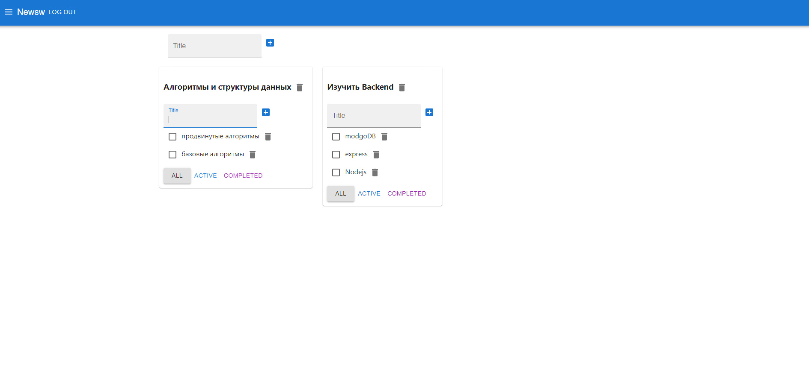

Express, backend lag - Nodejs, frontend lang - typescript (Reactjs 18),FC, Hooks(default и Custom), Redux(React-Redux, Redux-thunk), Axios, REST API, Formik, React-Router-Dom, MUI, React-testing-library, Storybook. Чем занимался на проекте :
Реализация UI/UX без макета, с использованием CSS библиотеки Maaterial-UI(MUI), написание логики на фронте для всех CRUD операций, написание юнит тестов, подключение Storybook, валидация форм при авторизации. Потрогать приложение в виде деплоя можно тут(используйте фри аккаунт для входа), а код в данном репозитории. Серверная часть написана разработчиками IT-Incubator`а